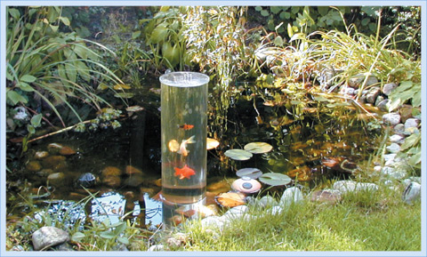
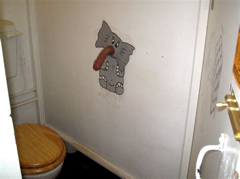
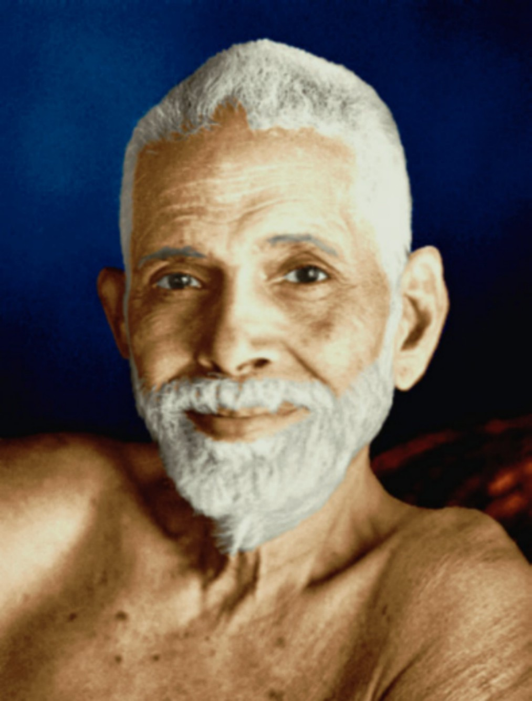
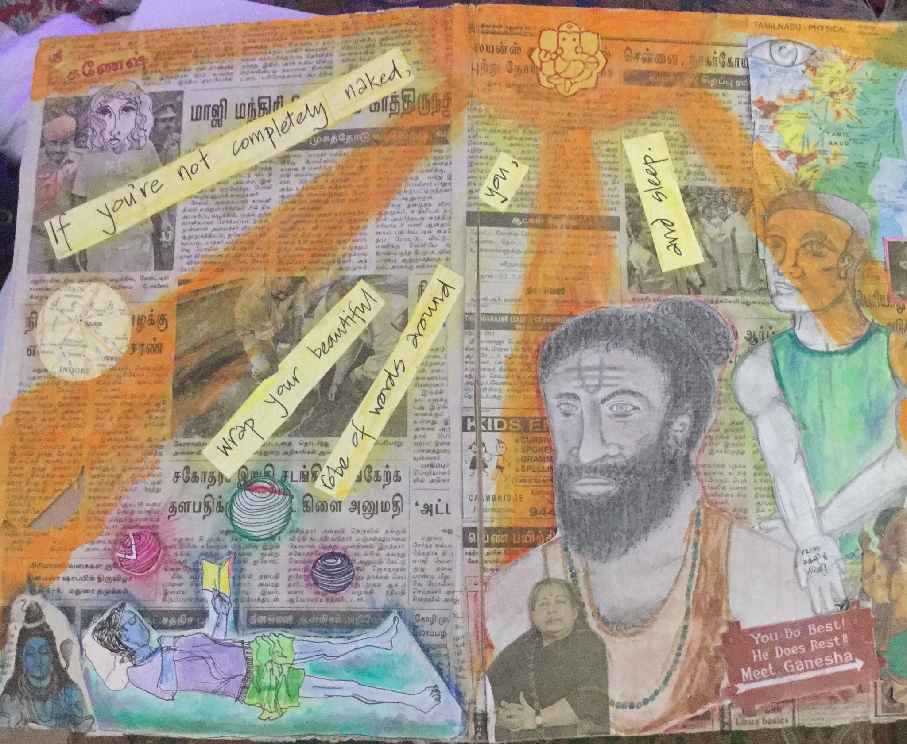

1. What is your idea of perfect happiness?
A healthy suspicion of both/and; an imperfect understanding of either/or
1. What is your idea of perfect happiness?
A healthy suspicion of both/and; an imperfect understanding of either/or
2. What is your greatest fear?
To drink from an actual stream of consciousness clear lost in some dreary, desert sands of dead habit, where to find the mind is without fear.
3. What is the trait you most deplore in yourself?
Hand/eye coordination. no surprise I’m not good at catching shit.
4. What is the trait you most deplore in others?
5. Which living person do you most admire?
Lorilai Biernacki
6. What is your greatest extravagance?
I'm "had" by Apple.
And that's a lie. It's been, at various times in my life, drug habits. Today I choose to live, which is, to be free and serene.
7. What is your current state of mind?
A mild chop reflective from right-to-left lateral dorsal
8. What do you consider the most overrated virtue?
Idealism
9. On what occasion do you lie?
Presented with less compelling narrative,...
10. What do you most dislike about your appearance?
My tongue's texture.
11. Which living person do you most despise?
Whosoever reflects undue time upon this question.
12. What is the quality you most like in a man?
Sincerity *cum* levity.
13. What is the quality you most like in a woman?
The light that floats just above her skin as seems light does to float just above the surface of a pearl.
14. Which words or phrases do you most overuse?
"namaste," "and so...," "I didn't do it!"
15. What or who is the greatest love of your life?
Sanskrit.
16. When and where were you happiest?
Just earlier today when, still asleep, I couldn't be sure whether I had feet, or wings, or both.
7. Which talent would you most like to have?
The inverse ability to see & to feel, as in wood the grain, in narrative the truth twisted & torn despite what present means to knowledge exists in rational counterpoint of what an other may ask that I regard as real.
18. If you could change one thing about yourself, what would it be?
To know that about my self which I'm yet to know.
19. What do you consider your greatest achievement?
Remaining aware this ‘I’ throughout waking, dreaming, and sleeping. Waking consciousness I, in lived dreamscape, overtook duality unreflected, inherent to immanent experience.
20. If you were to die and to come back as a person or thing, what would it be?
Some extra-social banality, such as the hair swoosh or the gloryhole. And to be yet as simple.
21. Where would you most like to live?
A home to which I securely prepend ‘my’.

22. What is your most treasured possession?
An awareness devotion as the beginning of knowledge.
23. What do you regard as the lowest depth of misery?
A perseverating whore.
24. What is your favorite occupation?
Realizing I’m already naked, and so I wrap a beautiful robe of words around me before a sleep seeps from within my eyes to seal the corners of my eyes shut, and thereupon closed lids stars dance.
25. What is your most marked characteristic?
male / white (caucasian)